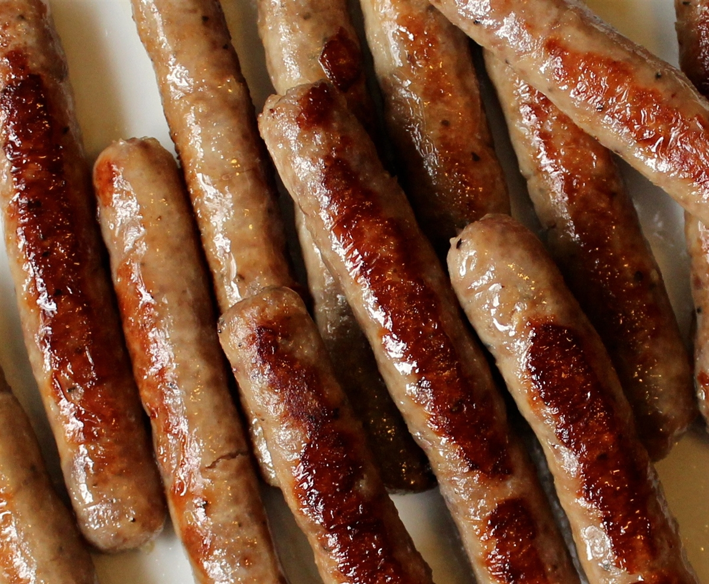

This recipe is for sausage, which is a spicy ground meat, specfically pork, that is
stuffed into a narrow tube of skin.
Figure: Literally, Lovely Links

You will need the following ingredients:
- 8 ounces of breakfast sausage (8 links)
- 2 tablespoons of water
- ½ tablespoon of unsalted butter
This recipe is adapted from the Food Network cookbook How to Boil Water: Life
Beyond Takeout.
-
Place the sausage in a skillet just large enough to hold them in a single
layer
-
Add the water, cover, and cook over medium heat for 3 minutes
-
Uncover, add the butter, and increase the heat to high
-
Cook until sausage is golden and butter just begins to brown, about 4
minutes
-
Serve hot and enjoy!